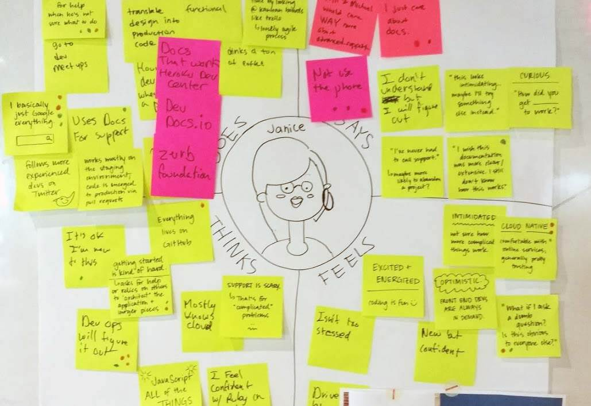
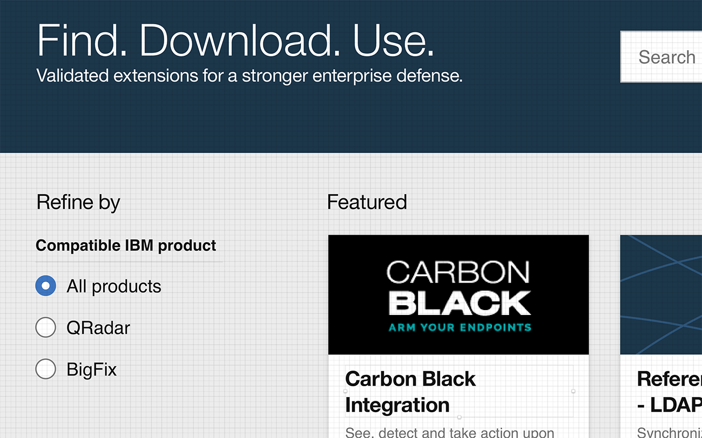
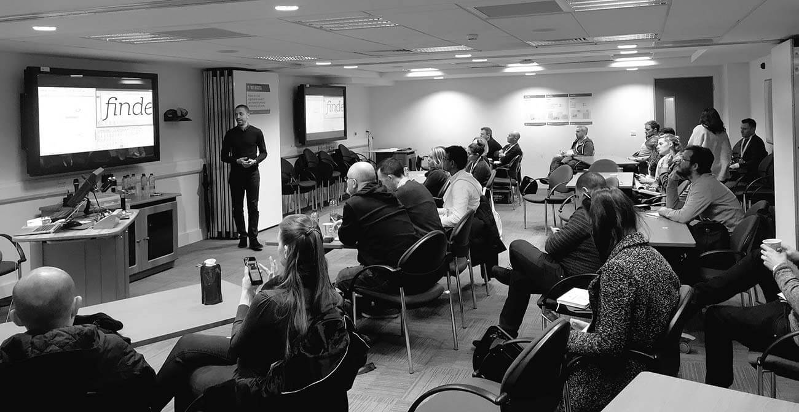
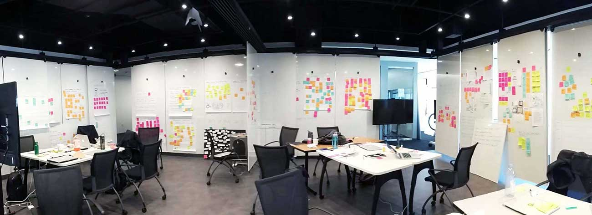

It’s an exciting time to be a designer at IBM. In 2012, 101 years after its foundation, the tech giant started a deep corporate culture renovation, shifting towards a focus on users’ outcomes and design thinking. These are some thoughts about my role at IBM, and how my team and I are contributing to the transformation of the company.
Company
IBM
Timeframe
Jan 2015–present
To comply with my non-disclosure agreement, I am not allowed to show more of the products I am working on. The thoughts on this page are my own and do not necessarily reflect the views of IBM.
Design research
Software with great features focusing on user outcomes
As a designer in the IBM Security team, most of the software I work on is in the complex space of cybersecurity. Designing for the highly specialized users who use our products makes it hard to guess what features would work well, and highlights the importance of design research.
Together with my team, we define research objectives, conduct secondary research (articles about the space, competitor analysis, etc.), and run many rounds of user interviews. These interviews help us find the real pain points of our users, validate our assumptions, and test the usability of our designs. We also have plenty of calls with experts in different areas — technical, legal, etc. — to make sure our solutions are feasible and to improve them at each iteration.

Let me introduce you to Janice — and her empathy map.
Culture and collaboration
Getting engineers to speak design
“We know what (features) we want” is an attitude that can easily lead teams to forget what the users really need. Part of what I feel is our job as ambassadors of design in a large enterprise is getting the whole team to fully understand the value of design thinking.
IBM operates in diverse, multidisciplinary teams, which are often distributed in multiple locations and time zones. Getting an engineer on the other side of the Atlantic to trust “these designers” telling him how to make software in spite of his many years of experience can seem a daunting task. Indeed, at first some people might feel uncomfortable trying out new methodologies. What I’ve found is that, if you work together with the right spirit, eventually they’ll not only appreciate your work and the results the team is getting, but also start to explicitly request your help for new projects.
For a side project, I introduced this group of non-designers to design thinking. The impact has been incredible.
Visual design
Software for security professionals can look beautiful too
When it comes to visual design, as a designer in IBM Security I use both the IBM Design Language and the IBM Security Design Guide. Both these resources are living languages: I often prototype, test, and discuss new patterns with the rest of the team to further refine our tools. In addition to this, my passion for typography and semi-obsession for baseline grids and pixel perfection always makes me very happy to talk anything related to visual design.
I thought I heard you say “let’s explore a few alternatives”?

Told you I love pixel-perfect designs with precise baseline alignments.
Sharing knowledge
Being a design ambassador inside and outside IBM
With so much going on in design at IBM, there are many opportunities to share knowledge and tell the tale — if you're willing to. I've had the pleasure to lead many design thinking workshops for a range of people that goes from IBM engineers to 15-year-old students. I also had the chance to be a speaker at a couple of conferences. At UX Ireland I presented a study I conducted about how typography can influence user experience, and I was overwhelmed with the response. A blog post with the key findings from that study is coming very soon.

That’s me speaking at UX Ireland in November 2016. Photo: Lara Hanlon.
Inventions
Innovation through design
For over 20 consecutive years, IBM has been topping the annual list of U.S. patent recipients (yes, IBMers are quite smart). Designers at IBM are also making their contribution, and two invention disclosures I worked on with my team have been published on ip.com (you can check them out here and here).

The whiteboards in the IBM Studios can get quite full of Post-it notes. Luckily they are recyclable.